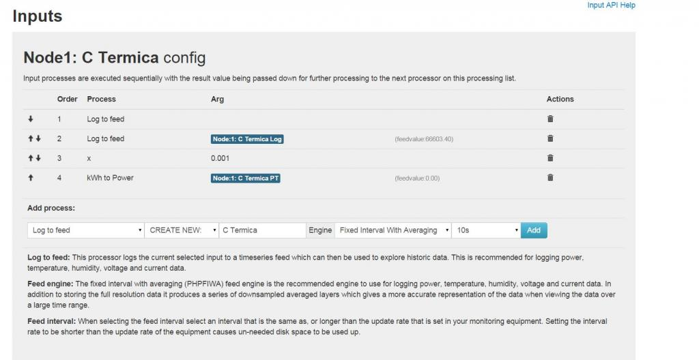

Hi.
I have this installation running since yesterday. All of a sudden some feeds stopped updating. All inputs are being update but some feeds aren't.
I have no idea why is this happening...
Edit: New information:
Added 3 new .jpg (input geral, input temp and input geral2).
The difference in geral and geral2 is only the RESET TO ZERO and the allow positive/negative. In the geral input the process doens't work. In Temperature it does.
I really need some help now :/
Re: Some Feeds stopped updating
I'm afraid there isn't enough info here to help you. You will need to break it down a bit show a couple of specific process chains for the feeds not updating.
RESET TO ZERO and the allow positive/negative are basically the same thing what isn't working?
Paul
Re: Some Feeds stopped updating
All right, let me see if I can explain the situation a little bit better now:
Geral.jpg:
First 4 processes are working (feeds value is updated every minute). 5th and 6th I don't know but the 7th process isn't working for sure. The feed value in the 7th process should be the same as the 6th.
Torreg.jpg:
All processes are working (some of them were added after some feeds on other inputs process list stopped working).
temp.jpg:
All feeds are working.
gas caldeiras.jpg:
All feeds are working.
ctermica.jpg:
Feeds not working (feedvalue stopped updating).
cozinha.jpg:
Feeds stopped working (feedvalue not updating).
I have 17 inputs. The feeds process of first 6 inputs are working. The 7th input is Geral where the first processes are working but the last one aren't.
From 8h-17th inputs feeds stopped working.
You can see the raw data graphs of 2 of the feeds that stopped working in avac rooms raw data.jpg and pisc ext raw data.jpg
Edit: Forget to say that all 17 inputs are receiving data every minute.
Re: Some Feeds stopped updating
Hi Bruno
In this image, the first item has no name which probally suggests you deleted the feed from the feeds page.If that is the case you must delete any reference to it in the process lists.
If you know where the processing stops (ie around step 6 of input 8) you can add a "test" feed and move it up or down the chain to determine what is (or isn't) happening, if one feed or step is wrong it breaks the chain.
Paul
Re: Some Feeds stopped updating
Hi Paul!
This is where feed process stop working.
Feed Geral test1 works. Then kWh to Power also works. Geral teste2 doens't work anymore. All feed of the inputs after this doens't work also.
Edit: C Termica is the 9th input (Geral is the 7th). I forgot to delete that feed to log but that wasn't the origin of the problem because I deleted that feed hours after feeds stopped working.
Re: Some Feeds stopped updating
Further to the above, when using references to inputs within processing chains as you have in line 6 of input 8
you need to be very aware of the fact you are adding the input by its system id and if you delete the input from the inputs page, when the feed is recreated automatically by emoncms it will have a different system derived id. So it will look like you are referencing the same input from your process chain but you are not.
I suspect that is what has happened here so your +input is refering to a deleted input. replace the +input with a new +input to resolve the issue, or at least until you delete the input again. It is for this reaso I always use +feed not +input for a more robust system. it is is both noticable and harder to delete a feed,
Paul
Re: Some Feeds stopped updating
I didn't deleted any inputs from the inputs page. In the last post I had already deleted the +input feed. I only had add that +input yesterday after feeds stopped working just to test it.
Edit: Those feeds stopped working 24-25 hours ago. At that time, I only had 1 feed to log in every process list plus x0.001 and kwhpwr in inputs receiving electrical energy consumption.
Re: Some Feeds stopped updating
So is it since adding or moving the "kwh to kwh/d ? I notice in the list of inputs it comes after the kwh to power and in that inputs processing chain images it appears before it.
The kwh to kwh/d is expecting a accumulating "total" of energy to work with, if the "total" kwh is reduced, for example the last 15mins used 20kwh but the previous 15mins used 22kwh this will probally be ignored as it would expect the first reading of 22kwh to be followed by a reading of 42kwh.
So you need to be totaling the 15min totals using an accumulator and then use the kwh to kwh/d on that ever increasing total.
Paul
Re: Some Feeds stopped updating
Probably it's that!
I add kWh to kWh/d after kWh to Power. When the outcome wasn't what I expected, I moved it up to the 2nd spot in the order list (don't remember if I deleted and added a new one). Feed after that add don't work so it might be it.
How can I fix it now? I've deleted the input process and the feed in the feed list but it didn't solved the problem.
Edit: It's fixed! I've deleted all input process from Geral input and now all feeds are being updated! I tried to add then again in the input process but when I do that the feeds stop updating again. kWh to Power feed must be corrupted somewhere. The solution is to add new feeds and that's done!
Ufff, I'm more relief now! At the same time I'm scared that this can happen again and mess up my data, forcing me to start new feeds all over again losing some precious graphs. It's something I have to live with I guess.
Thank you so much for your precious help Paul!! :D
Re: Some Feeds stopped updating
Yesterday, some feeds stopped working again. My though was that was something to do with the kwhkwhd I added minutes before in an input process list, so I disabled it and all started working again.
Today, there's a whole different story!
I'm sending data to emoncms using a simple python script I wrote. That script reads the older .csv file in a folder, sends the data and then deletes the .csv file. Those csv files are gererated every minute.
The script stops working after some hours for a reason I don't know. Because of this and because I didn't handle this over the weekend, I have hundreds of csv files to upload to emoncms. Yesterday I changed the script to run the code every 10 seconds so I could send 6 minutes of data in one minute and start catching current day.
Today when I logging I saw the script stopped working during the night/yearly morning, so I started it again.
The thing is, only 1 feed (the first) is being updated. All the others are not working anymore. I didn't add any feed or deleted any today. The only thing I've made in emoncms today was viewing dashboard, view some feed graphics.
I've tried to make Event Module work using the following code:Then I clicked in Update&Check (which retrive the same blank page as always).I've followed every step from the install in linux guide so I don't know why I have this bugged installation of EmonCMS :(
This is very dissapointing :(
Edit: add screenshot in attachment. That first log feed in the 1st input works. All the others stopped working, so I deleted the feeds from input 2 and 3 to see if others would start but they didn't...
Edit2: Deleted the only feed that was working. All feeds started to work... I really don't understand this...
Re: Some Feeds stopped updating
Bruno, you already have a thread running regarding the event module -http://openenergymonitor.org/emon/node/10454
There's little point in introducing it in this thread as well, as it is duplicity and will confuse the issues.
Could you please edit your post above.
Paul - Moderator
Re: Some Feeds stopped updating
Done. I only did mention that here because it could have something to do with the problem regarding the feeds not working.
Re: Some Feeds stopped updating
Thanks. You could always include a link to the other thread.
Paul